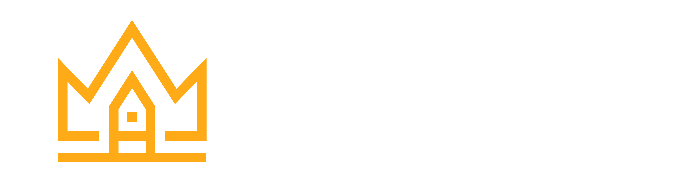

Como reposicionar sua estratégia de mídia no 2º semestre — as melhores práticas para anúncios na nova lógica de entrega da Meta.
A Nova Disputa
A competição agora é por três coisas. A pergunta mudou de "quanto eu coloco de verba?" para "que sinais eu estou entregando?"
Capturar o olhar do usuário antes de qualquer concorrente no feed.
Ser escolhido pelo algoritmo como a melhor opção para entregar.
Alimentar o algoritmo com dados precisos para otimização contínua.
O Diagnóstico
Índice comparando CPC/CPM globais e Brasil efetivo, já com impacto tributário em 2026.
Série direcional consolidada com benchmarks públicos; Brasil efetivo inclui 12,15% de repasse tributário em 2026.
CPM/CPC em alta + criativos cansando rápido + ROAS instável: a equação que comprime margens e torna o ROI imprevisível.
Contexto
A digitalização acelerou, anunciantes explodiram e verbas cresceram. Mas a atenção das pessoas continuou a mesma.
Crescimento relativo de 2019 a 2023 — atenção do feed estagnada enquanto oferta e investimento dispararam.
Mais anunciantes + mais verba + espaço limitado = competição extrema no feed.
A Nova Régua
No feed, você não compete apenas com outras lojas do seu segmento. Disputa espaço com creators, marketplaces, apps de entretenimento, memes e conteúdos virais.
Pensar só nos concorrentes diretos
Brigar por palavra-chave
Olhar apenas o nicho
Disputar com creators e marketplaces
Apps, memes e conteúdo viral
Brigar pelo olhar, não pela busca
Onde a maioria erra
Trocar a cor do criativo, alterar headline e mudar um único gancho não funciona mais. Criativos muito parecidos não ganham chances reais de entrega.
O algoritmo trata variações superficiais como repetição. Eles morrem antes mesmo de chegar ao leilão.
Diversidade superficial não engana o Andrômeda. Variação real exige mudança de eixo — formato, ângulo, persona, mensagem.
Era Andrômeda
Uma nova lógica criada pela Meta para selecionar e entregar anúncios em escala. Uma infraestrutura que redefine como os anúncios são filtrados, ranqueados e exibidos para as pessoas certas.
O Andrômeda mudou a lógica do tráfego pago. Determina quais anúncios chegam ao leilão, quais são ignorados e quais escalam — antes mesmo da disputa começar.
A Motivação da Meta
Milhões de marcas disputando o mesmo feed ao mesmo tempo, com bilhões de combinações possíveis de anúncio.
Usuários ignoram, ocultam ou saem do app. A plataforma perde receita e atenção com cada entrega irrelevante.
A Meta precisa escolher qual anúncio entregar para cada pessoa em tempo real, sem margem para erro.
A Arquitetura
O leilão não é o começo do processo — ele é quase o fim. Antes de qualquer disputa, a Meta já fez uma filtragem silenciosa e decisiva.
A maioria dos anúncios nem chega a competir. São descartados na pré-seleção do Andrômeda — antes mesmo do leilão começar.
A Lógica do Filtro
Imagine uma biblioteca gigante. A plataforma não lê cada anúncio individualmente — ela busca por categoria, prateleira e tema. Só os criativos com sinais claros são encontrados.
Tipo de mídia, estilo visual e composição classificam seu criativo na prateleira certa.
Promessa, argumento e item anunciado definem com quem e quando seu anúncio compete.
Desempenho anterior, engajamento e histórico de conversão completam o perfil do criativo.
Risco Invisível
Seu anúncio pode nem chegar ao leilão. Criativos muito parecidos se canibalizam antes de disputar.
A plataforma trata como repetição. Nenhum dos criativos ganha chance real de competir.
É a falta de variedade de sinal. Sem repertório, mesmo a melhor conta trava na escala.
Mudança de Mentalidade
Pare de perguntar só "qual campanha subir?". A nova pergunta é: que diversidade de mensagens, formatos, pessoas, provas e contextos estou oferecendo ao algoritmo?
Em vez de focar só em orçamento ou estrutura de campanha, o foco deve estar na variedade real: mensagens diferentes, formatos distintos, personas variadas, provas sociais diversas e contextos múltiplos.
Quanto maior e mais variado o repertório criativo, mais oportunidades o algoritmo tem de encontrar o anúncio certo para a pessoa certa — gerando escala com eficiência e previsibilidade.
Diversidade criativa garante entrega. Qualidade dos eventos garante aprendizado. Sem os dois, você não escala.
Pilar 1
Diversidade não é fazer 20 versões iguais. Diferenças reais exigem variação em múltiplas dimensões: formato, ritmo, visual, ângulo, persona, contexto e mensagem.
"Sua performance digital está no criativo — e isso veio da Meta, não das 'vozes da minha cabeça'."
Volume sem variedade é apenas repetição. Variação real é o que destrava entrega no Andrômeda.
Mudança de Status
Criativo deixou de ser detalhe e virou o principal motor de faturamento. Produção criativa não deve ser tratada como improviso, mas como atividade central do negócio.
Produção criativa precisa virar operação — com frequência, método e processo definidos.
Diagnóstico Real
Parece problema de gestão de tráfego, verba ou segmentação. Mas a causa real é repertório criativo insuficiente.
O problema não é a gestão do tráfego. É falta de metodologia e processo criativo. Campanha = operação criativa.
Evolução Profissional
Interpretar dados, identificar gargalos criativos, propor testes e conectar mídia, oferta e conteúdo.
O gestor moderno não apenas sobe campanhas — ele lê sinais, diagnostica e orienta a operação criativa.
Quem só opera botões é substituível. Quem interpreta, orienta e propõe é indispensável.
Framework
Variar apenas cor ou headline não é diversidade criativa. São múltiplas dimensões que transformam um produto em várias oportunidades de entrega e aprendizado.
Reels, Stories, Feed, Carrossel, estático. Vídeos curtos, longos, rápidos ou conversacionais mudam retenção e desejo.
Ambiente, enquadramento, iluminação, edição. Ângulos de Dor, Benefício, Prova e Urgência criam motivos de compra.
Modelo, idade, contexto e linguagem ativam identificação em públicos diferentes do mesmo produto.
Cadência
Criativo deve ser rotina semanal. Sem produção, teste e melhoria constantes, o repertório acaba e a escala trava.
Quando a operação criativa ganha cadência, o repertório cresce de forma composta.
A máquina criativa precisa de frequência para sobreviver. Quando o ritmo cai, o algoritmo perde repertório e a entrega despenca.
Repertório Obrigatório
Toda marca precisa de uma biblioteca de linhas criativas testadas. Combine formatos, ângulos e personas para criar um repertório quase infinito.
UGC, entrevista, react, bastidores, palestrinha, caixinha de pergunta.
Tutorial, conversacional lo-fi, trends, comparação, ranking, lista.
Oferta direta, comparação de produto, best-sellers, campanha dinâmica de catálogo.
Mina de Ouro
O criativo está escondido no seu negócio. Cada elemento da sua loja já é um criativo esperando ser ativado.
Reviews → vire prova social com depoimento espontâneo
Best-sellers → ranking, lista, "produto mais comprado"
Dúvidas frequentes → caixinha de pergunta + resposta direta
Diferenciais → comparação lado a lado com concorrente
Rotina da loja → bastidores e tutorial geram autoridade
Catálogo → campanha dinâmica + narrativa
Pilar 2
Pixel, API de Conversões e qualidade de correspondência são o combustível da otimização. Um evento mal configurado gera uma campanha mal otimizada — o algoritmo aprende com o que você entrega.
Meta a perseguir: compra com nota 8+/10 de qualidade de correspondência. Envie Estado, País, Cidade, Sobrenome, Nome, Gênero, Data de nascimento e CEP para subir o score.
Framework de Campanha
Cada etapa tem um papel. Sem esse funil, a verba é desperdiçada em criativos não validados. Criativo precisa de esteira para crescer.
Valide criativos isolados, com verba pequena e objetivo claro.
Vencedores ganham verba e são consolidados.
Os melhores entram em campanhas robustas.
Me mande uma mensagem no direct com o número "2306" e eu te envio o material completo.